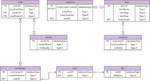

Adatbázisrendszerek
Ez a tantárgy az adatbázisok készítésének alapjait tartalmazza.
Tartalom
- Az adatbázis-kezelő feladata
- Az adatbázis objektummal
- Adatbázis-kezelő rendszerek
- Az adattáblák kezelése
- Az adattáblák kezelése, kulcs fogalma
- Rekordok felvitele, módosítása, törlések
- Az adattábla megjelenése, formázása
- Statisztikai számítások táblában
- Keresés: automatikus, speciális sszűrés űrlap szerint
- Lekérdezések: választó,törlő,frissítő stb.
- Adattáblák létrehozzása és összekapcsolása
- Táblák feltöltése